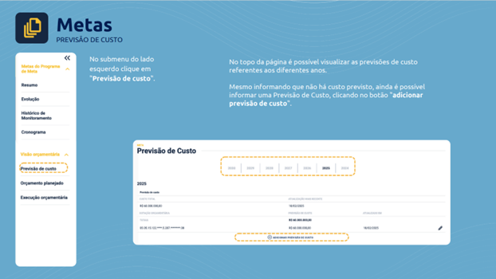
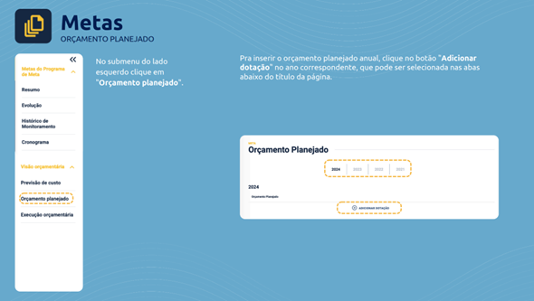
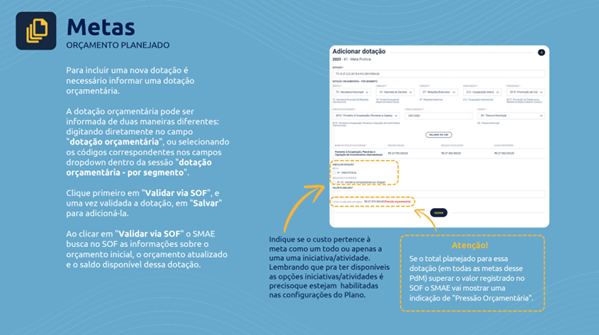
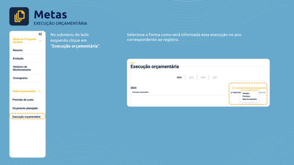
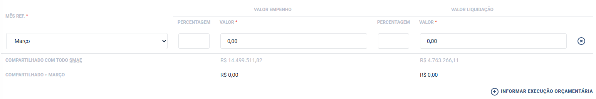
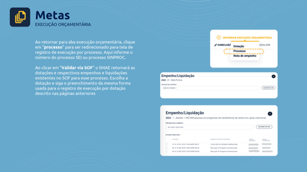
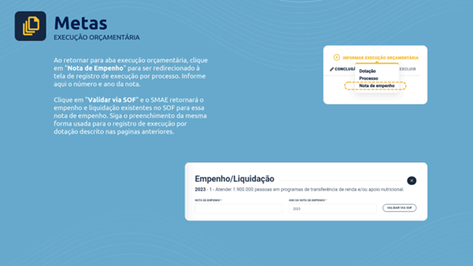
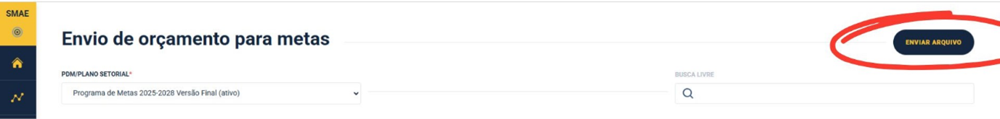
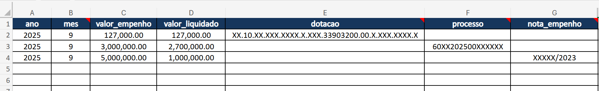

5 Quais são as etapas de monitoramento orçamentário?
O monitoramento orçamentário do Programa de Metas segue um ciclo composto por quatro fases principais: (1) Previsão de Custo; (2) Orçamento Planejado; (3) Execução Orçamentária; (4) Avaliação. Cada estágio envolve etapas de análise, validação e consolidação das informações fornecidas pelos órgãos, para acompanhar a execução das metas e subsidiar a gestão dos recursos.
5.1 Previsão de custo
A fase de Previsão marca o início do ciclo e consiste em informar a estimativa de custo quadrienal, segmentada por ano, para cada meta. A estimativa de custo se refere ao valor de mercado, calculado monetariamente, a partir do capital e do tempo gastos para a produção de um bem ou serviço necessário à realização da meta ou da ação estratégica.
Para facilitar a classificação dos valores informados como estimativas de custos, o SMAE foi estruturado para que este dado seja inserido vinculando-o a uma dotação, porém, de forma simplificada (sem os elementos de despesa). Note, contudo, que esta informação não se refere ao valor aprovado na LOA (Lei Orçamentária Anual) do exercício (este valor será informado em outra seção do SMAE, denominada Orçamento planejado, correspondente à proxima etapa do ciclo de monitoramento orçamentário).
| Aspecto | Descrição |
| Quando ocorre | Até 30 de abril de cada exercício* *Embora o preenchimento possa ocorrer em todos os exercícios, é possível que a previsão informada em 2025 permaneça inalterada, não requerendo novos preenchimentos. |
| Quem faz | Secretarias |
| Onde inserir | SMAE > Visão orçamentária > Previsão de Custo |
| O que inserir | O custo estimado da Meta ou Ação, ano a ano, até totalizar o quadriênio, informando partes da dotação orçamentária e vinculando a dotação à Meta ou à Ação. |
Passos para preenchimento no SMAE:
- Acesse a aba “Programa de Metas”
- No menu lateral esquerdo, clique em “Metas”
- Selecione a meta desejada
- No menu lateral, clique em “Previsão de custo”

Figura 1. Tela de Previsão de Custo no SMAE.
Na tela de Previsão de Custo, clique em “(+) ADICIONAR PREVISÃO DE CUSTO”. É nesta tela que você informará:
- dotação orçamentária (parcial): Órgão, Unidade, Função, Projeto/Atividade e Fonte. Os demais são opcionais;
- vinculação da dotação com a Meta OU com a ação estratégica;
- custo estimado da meta ou da ação
O custo estimado da meta ou da ação é o valor monetário real, ou estimado, para a sua concretização, independentemente dos valores orçados e disponíveis nas dotações informadas.

Figura 2. Adicionando Previsão de Custo no SMAE.
Embora a inserção da Previsão de Custo deva ser concluída no SMAE até abril de cada exercício, é possível que SEPLAN/SIME/CPMA colete, em fevereiro e março, informações adicionais junto à sua pasta, em complemento ao que estiver disponível no SMAE, para fins de construção do ANEXO DE METAS E INVESTIMENTOS, do Projeto de Lei de Diretrizes Orçamentárias (PLDO).
Esta coleta adicional não se confunde com o processo conduzido por SEPLAN/COPOM para a elaboração do PLDO, cujo prazo de entrega ao Legislativo é 15 de abril, de cada ano e que, por isso, tende a demandar informações de caráter geral (e não restritas ao Programa de Metas) nos períodos de fevereiro e março.
Note que a previsão de custo é mais intensiva no primeiro ano de vigência do Programa de Metas. Nos anos seguintes, podem ocorrer revisões. É plausível, inclusive, que a previsão de custo seja inserida uma única vez no quadriênio.
Diversos fatores podem ensejar necessidade de revisão de custos:
Mudanças no modelo de implementação do equipamento, programa ou serviço (de execução direta para PPP, por exemplo);
Mudanças em variáveis macroeconômicas, preços de commodities e reequilíbrios econômico-financeiros de contratos;
Mudanças no escopo, prazos ou itens de qualidade previamente especificados para o equipamento, programa ou serviço;
Mudanças de fornecedores.
É fundamental disponilizar para SEPLAN/SIME/CPMA memórias de cálculo sobre o custo da meta. Combine com o(a) ponto focal o meio para entrega (SMAE, e-mail), mas não deixe de apresentar a composição do custo do equipamento, programa ou serviço pactuado no Programa de Metas.
As informações sobre custos não fazem parte do monitoramento externo do Programa de Metas, ou seja, não são disponibilizadas publicamente nos Relatórios de Execução Anual e nos Balanços Semestrais.
5.2 Orçamento planejado
O registro do orçamento planejado no SMAE consiste em informar os valores efetivamente contemplados na Lei Orçamentária de cada ano, nas dotações vinculadas ao Programa de Metas.
| Aspecto | Descrição |
| Quando ocorre | Até 30 de abril de cada exercício |
| Quem faz | Secretarias |
| Onde inserir | SMAE > Visão orçamentária > Orçamento planejado |
| O que inserir | Valor destinado ao Programa de Metas para o exercício, no limite dos valores orçados aprovados na Lei de Orçamento Anual, vinculando-o à Meta ou Ação |
Passos para preenchimento no SMAE:
- Acesse a aba “Programa de Metas”
- No menu lateral esquerdo, clique em “Metas”
- Selecione a meta desejada
- No menu lateral, clique em “Orçamento Planejado”

Figura 3. Tela de Orçamento Planejado no SMAE.
Na tela de Orçamento Planejado, clique em “(+) ADICIONAR DOTAÇÃO”. É nesta tela que você informará:
- dotação orçamentária completa;
- vinculação da dotação com a Meta OU com a ação estratégica;
- Valor da meta ou da ação para o exercício, limitado ao valor aprovado na LOA.

Figura 4. Adicionando Orçamento Planejado no SMAE.
Note que se as informações sobre a PREVISÃO DE CUSTO e sobre o ORÇAMENTO PLANEJADO estiverem adequadamente registradas no SMAE, tanto a sua pasta quanto SEPLAN conseguem mapear eventuais PRESSÕES ORÇAMENTÁRIAS para cada exercício. Em outras palavras, se em uma determinada dotação o custo previsto for maior que o valor orçado, é provável que a sua pasta necessitará de mais recursos.
5.3 Execução orçamentária
O registro da execução orçamentária no SMAE consiste em informar os valores efetivamente empenhados e liquidados com despesas do Programa de Metas.
| Aspecto | Descrição |
| Quando ocorre |
|
| Quem faz | Secretarias |
| Onde inserir | SMAE > Visão orçamentária > Execução orçamentária |
| O que inserir | Despesas contabilizadas para fins de monitoramento orçamentário do Programa de Metas, apuradas em:
|
Passos para preenchimento no SMAE:
- Acesse a aba “Programa de Metas”
- No menu lateral esquerdo, clique em “Metas”
- Selecione a meta desejada
- No menu lateral, clique em “Execução Orçamentária”

Figura 5. Tela de Execução Orçamentária no SMAE.
Após analisar o atributo de exclusividade das dotações e contratações, opte se a execução orçamentária acumulada do período será informada por dotação, processo ou nota de empenho.
5.3.1 Dotação

Figura 6. Adicionando Execução Orçamentária no SMAE, por dotação.
Após fazer a vinculação da dotação orçamentária com a meta ou com a ação estratégica:
Clique em “(+) INFORMAR EXECUÇÃO ORÇAMENTÁRIA”.
Informe o mês de referência: trata-se do mês até o qual os valores executados estão acumulados.
Informe o Valor Executado: trata-se do valor acumulado até o mês de referência. É possível obter o valor executado tanto pela inserção direta do valor quanto pela percentagem (0 a 100) referente ao Programa de Metas na dotação orçamentária informada.
Clique em Salvar para finalizar.

Figura 7. Adicionando Execução Orçamentária no SMAE, por dotação – inserindo valores.
5.3.2 Processo

Figura 8. Adicionando Execução Orçamentária no SMAE, por processo.
Após selecionar a dotação orçamentária e fazer a vinculação com a meta ou com a ação estratégica, sigo os passos da Figura 7:
Clique em “(+) INFORMAR EXECUÇÃO ORÇAMENTÁRIA”.
Informe o mês de referência: trata-se do mês até o qual os valores executados estão acumulados.
Informe o Valor Executado: trata-se do valor acumulado até o mês de referência. É possível obter o valor executado tanto pela inserção direta do valor quanto pela percentagem (0 a 100) referente ao Programa de Metas na dotação orçamentária informada.
Clique em Salvar para finalizar.
5.3.3 Nota de empenho

Figura 9. Adicionando Execução Orçamentária no SMAE, por nota de empenho.
Após informar o número e o ano da nota de empenho, siga os passos da Figura 7:
Clique em “(+) INFORMAR EXECUÇÃO ORÇAMENTÁRIA”.
Informe o mês de referência: trata-se do mês até o qual os valores executados estão acumulados.
Informe o Valor Executado: trata-se do valor acumulado até o mês de referência. É possível obter o valor executado tanto pela inserção direta do valor quanto pela percentagem (0 a 100) referente ao Programa de Metas na dotação orçamentária informada.
Clique em Salvar para finalizar.
5.3.4 Upload de arquivo .xlsx
O envio de dados sobre execução orçamentária por meio de upload de arquivo .xlsx tem como objetivo:
reproduzir num arquivo Excel as mesmas informações necessárias para o preenchimento da seção “Visão Orçamentária > Execução Orçamentária” do SMAE;
permitir que o órgão preste contas de diferentes metas em um mesmo arquivo;
permitir que o órgão revise as informações antes de fazer o upload e cheque eventuais inconsistências apontadas pelo próprio SMAE, após fazer o upload.
Se deseja informar os dados de execução orçamentária via planilha:
Acesse a aba “Programa de Metas”;
No menu lateral esquerdo, clique em “Envio de arquivos”.

Figura 10. Tela para informar execução orçamentária via upload de arquivo .xlsx.
Selecione a versão do PdM que está em uso;
Escolha a opção “enviar arquivo”, localizada no canto superior direito.

Figura 11. Tela para informar execução orçamentária via upload de arquivo .xlsx.
A planilha a ser inserida deve seguir o seguinte modelo. Note que ela vem com dados preenchidos a título de exemplo. Exclua ou sobrescreva com as informações do seu órgão:

Figura 12. Modelo de planilha para informar execução orçamentária via upload de arquivo .xlsx.
Durante o preenchimento, alguns padrões precisam ser seguidos para que o SMAE processe os dados:
Não altere os nomes das colunas. São eles que permitem o cadastro adequado das informações no SMAE e a checagem com o SOF.
Ao fazer o preenchimento dos dados, cheque se há espaços sobressalentes, já que são contados como caracteres e podem inviabilizar o cruzamento automático com o SOF.
ano: preencha com o ano ao qual a execução orçamentária faz referência (portanto, será: 2025, 2026, 2027 ou 2028)
mes: preencha com:
3 para o 1º ciclo de monitoramento orçamentário (até 30/04 de cada exercício), para registrar a execução orçamentária entre 1º/jan até 31/mar;
6 para o 2º ciclo de monitoramento orçamentário (até 30/07 de cada exercício), para registrar a execução orçamentária entre 1º/jan até 30/jun;
9 para o 3º ciclo de monitoramento orçamentário (até 30/10 de cada exercício), para registrar a execução orçamentária entre 1º/jan até 30/09 e
12 para o monitoramento orçamentário do exercício anterior (até 30/01 de cada exercício), para registrar a execução orçamentária entre 1º/jan e 31/12.
valor_empenho: preencha com o valor empenhado no período de referência correspondente à dotação, ao processo ou à nota de empenho vinculada à meta ou à ação estratégica. Não é necessário preencher esta coluna caso a coluna percentual_empenho for preenchida!
valor_liquidado: preencha com o valor liquidado no período de referência correspondente à dotação, ao processo ou à nota de empenho vinculada à meta ou à ação estratégica. Não é necessário preencher esta coluna caso a coluna percentual_liquidado for preenchida!
percentual_empenho: preencha com valores entre 1 e 100, a proporção do valor empenhado no período de referência correspondente à dotação, ao processo ou à nota de empenho vinculada à meta ou à ação estratégica. Não é necessário preencher esta coluna caso a coluna valor_empenho for preenchida!
percentual_liquidado: preencha com valores entre 1 e 100, a proporção do valor liquidado no período de referência correspondente à dotação, ao processo ou à nota de empenho vinculada à meta ou à ação estratégica. Não é necessário preencher esta coluna caso a coluna valor_liquidado for preenchida!
meta_codigo: no menu suspenso, faça a vinculação entre a meta e o valor executado no período de referência, conforme a dotação, o processo ou a nota de empenho.
iniciativa_codigo: no menu suspenso, faça a vinculação entre a ação estratégio e o valor executado no período de referência, conforme a dotação, o processo ou a nota de empenho;
- Mesmo que o número da meta conste no código da ação estratégica, ao preencher a coluna iniciativa_codigo, deve-se preencher também a coluna meta_codigo;
dotacao: preencha com a dotação em um dos seguintes formatos:
00.00.00.000.0000.0.000.00000000.00
00.00.00.000.0000.0.000.00000000.00.0.000.0000
00.00.00.000.0000.0.000.00000000.00.0.000.0000.0
Lembre-se que espaços antes ou depois da dotação inserida inviabiliza o processamento.
processo: informe os números de processo de contratação e de pagamentos sem pontos (.), hífen (-) ou barra (/), apenas com números.
- Caso opte por informar os processos, será necessário preencher a coluna dotacao, pois um mesmo processo pode onerar diferentes dotações. Portanto, deve-se repetir o preenchimento em tantas linhas quantas forem necessárias para diferenciar as dotações utilizadas.
- O SMAE aceita caracteres como: “.”, “-” ou “/”, já que possui a máscara do formato de processos do SEI e do SIMPROC. Inclusive é possível que apareçam mensagens no SMAE indicando que sejam inseridas informações no formato “0000.0000/0000000-00”, por exemplo. Porém, temos percebido menor quantidade de erros quando caracteres especiais não são inseridos nesta coluna.
nota_empenho: informe o número da nota de empenho no formato “00000/202X”.
Não informe número da dotação e da nota de empenho simultaneamente, pois o SMAE não processará os dados corretamente.
Não informe número da processo e da nota de empenho simultaneamente, pois o SMAE não processará os dados corretamente.
Antes de fazer upload do arquivo, exclua a aba “tabelas auxiliares”.
Após fazer o upload, verifique apareceu a mensagem de que o arquivo foi carregado com sucesso e atualize o navegado (F5).
Uma vez que o upload foi concluído, você pode checar o status de processamento de cada linha fazendo o download do arquivo que você enviou. Caso alguma linha não tenha sido processada corretamente, cheque a coluna status com orientações sobre como proceder. Se a orientação não for suficiente, contate o seu interlocutor em SEPLAN/SIME/CPMA.
Quando o status de todas as linhas for “Importado com sucesso”, significa que você concluiu o envio das informações!
5.4 Avaliação
A fase de Avaliação é realizada por SEPLAN/SIME/CPMA, com a consolidação dos dados obtidos nas etapas anteriores, permitindo à SEPLAN analisar o desempenho orçamentário e identificar riscos que possam comprometer o atingimento das metas. A partir dessa análise, são elaboradas recomendações e orientações técnicas voltadas ao aperfeiçoamento da execução orçamentária e à mitigação de riscos, bem como diálogo entre os gabinetes de SEPLAN e das secretarias executoras do PdM.